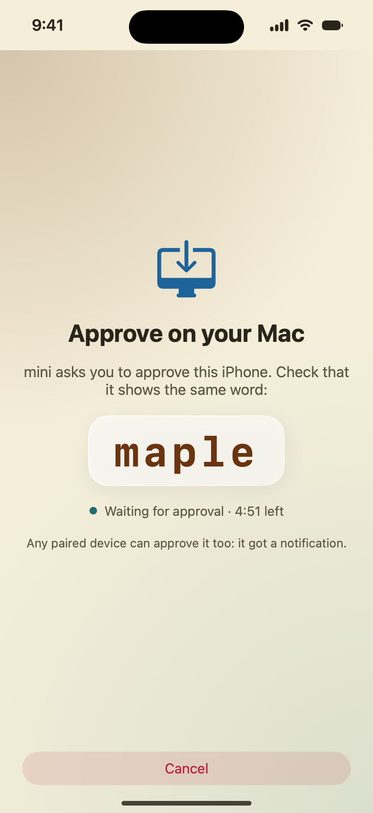
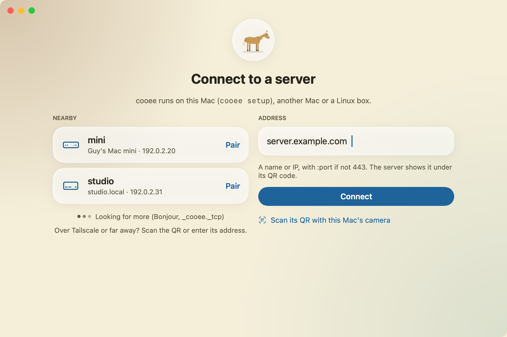

Pairing, drawn from /screens/pair
Finding the server stays native: Scan QR, Nearby and Enter address are today's screens, unchanged, and a scanned QR still pairs at once. Once the app knows the server, it draws that server's pair screen, as the caller's state: no cookie (fixtures/pair-start.json) and waiting for a yes (fixtures/pair-wait.json).
Today · native “Approve on your Mac”, iPhone

After · BlocksView, iPhone: no cookie
After · BlocksView, iPhone: waiting
Today · native Connect, Mac (stays: it finds the server)

After · BlocksView, Mac: after Pair on “mini”, then waiting